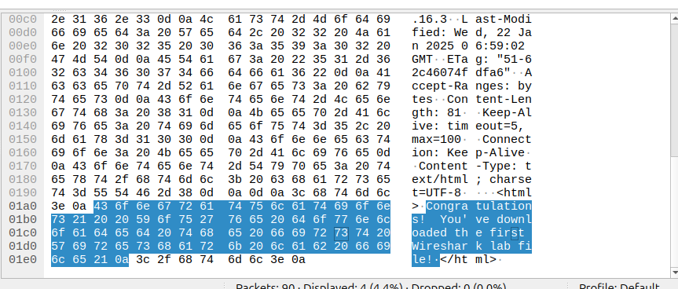
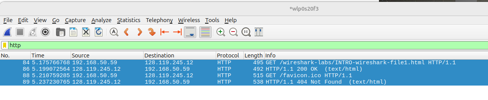
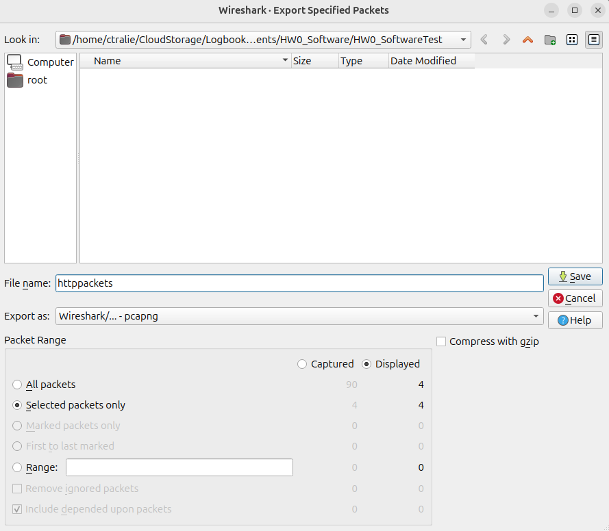
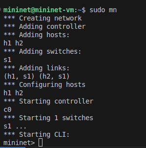

Homework 0: Software Test / Wireshark / Mininet Intro (18 Points)
Chris Tralie
Learning Objectives
- Practice some basic terminal commands we'll be using in the class
- Get some initial exposure to wireshark
- Make sure mininet is working in VirtualBox
Description / Overview
We're doing some serious systems programming in the class, and I also want to have fun assignments that get you hands on experience with every layer of the network stack. Because of this, the process to setup a software environment for this class is more involved than usual. To make sure everyone is setup properly, I have devised a series of tests to verify that everything we need is working. If you get stuck or something unexpected happens at any point while following the instructions below, you should immediately post on Discord. We'll work through it there together (I'm giving students role labels for each platform on our channel to help us coordinate that)
Getting Started
First, follow the software installation instructions. Note that they will differ slightly depending on your platform They may take a while, but you will be rewarded 😅 (with points on this assignment and with the inherent satisfaction of having a slick software setup).
Step 1: Folder Setup / Leak Tester (3 Points)
Once you're finished and everything is in place, I'd recommend that you create a designated directory for everything CS 475 related (using mkdir or the GUI file tree browser in VSCode). Open your terminal in VSCode, and use the cd command to change into this designated directory. Then, to obtain the test software I've created, type
We're going to do a quick test of memory leaks, which, as you recall, occur when we don't take care to cleanup dynamic memory that we request during the run of our program. It's very common to forget to clean things up, but this can cause us to run out of memory, as well as other strange errors. Thankfully, there are tools to check for memory leaks. Those who are running windows or Intel-based mac can use valgrind or, while others can use clang's memory leak sanitizer.
Change back to the root of HW0_SoftwareTest. Then, if you're on Windows using valgrind, do the following:
Valgrind Directions
Now type
Alternatively, use the Clag memory sanitizer:
Clang Memory Sanitizer
Now type
In both cases, take note of how many bytes of memory were "lost" or "leaked," and indicate this number on canvas, with a brief explanation as to why this number of bytes has been lost, based on the code in leak.c. Also, indicate whether you used valgrind or clang's memory sanitizer.
Step 2: ifconfig (2 Points)
Next, type the command ifconfig in your terminal, and take note of the network devices you have on your computer. On canvas, let me know what your devices are (no need to tell me your IP addresses or MAC addresses). For instance, on my computer I have two devices: lo (local loopback) and wlp0s20f3 (wireless):
Step 3: HTTP Request / netcat (3 Points)
First, launch your web browser. If you're on mac, you can use your ordinary web browser. If you're on windows using WSL, launch firefox from your terminal in the background and hit ENTER a few times if you need to to get past verbose output
Then, type the following into your terminal:
Next, navigate to the address http://127.0.0.1:49200/. Then, close the browser and copy and paste the message from your terminal into a text file called http.txt. Alternatively, you can repeat this whole process and pipe the output of netcat directly to the text file by typing
Step 4: Wireshark Test (5 Points)
Now, we're going to test a "packet sniffer" known as wireshark following an exercise at this link, courtesy of Jim Kurose. Read through and follow the directions on pages 1-9 of the document, except for three modifications:
- Skip the "Getting Wireshark" section, since we've already installed wireshark another way
- If you're on windows, be sure to launch firefox from your terminal, rather than the browser that you normally use
-
Ignore the part on disabling QUIC, unless you can't see the text in the decoded HEX on the HTTP receive packet, which should look like this:

Then, to prove that it worked and to practice manipulating specific packets in a sea of packets, I want you to do the following (a slight modification of what that lab asks on the last page):
- Take note of how long it took between when the HTTP GET message was sent until the HTTP OK response was received.
- What is the Internet address of the gaia.cs.umass.edu (also known as www-net.cs.umass.edu)? What is the Internet address of your computer?
-
Select just the the HTTP packets that you've captured:
then go to
File->Export Specified Packets. Check "selected packets only", then save ashttppackets.pcapnbFinally, change the permissions of this file by typing the following in the folder where you saved it:
Step 5: mininet Test (5 Points)
We're now going to test mininet.
First, launch Wireshark in the Ubuntu image with VirtualBox following the directions at this link. Note that this is different from launching Wireshark directly on your machine as we did in the above task! In fact, whenever we use mininet and we need to use wireshark, we'll have to be careful to launch it this way.
Now, in a separate terminal connected to that image (or in the same terminal if you're comfortable running processes in the background!), type
to startup mininet. You should see the following pop up in the terminal:

And you should see two new devices, s1-eth1 and s1-eth2 pop up in wireshark:
Double click on s1-eth1. Then, back in the terminal where you launched mininet, type
Back in wireshark, if you filter by icmp, you should see something like this:
Select and save these packets to a file called pingpackets.pcapnb. Change the permissions of this file to 775, and upload it as part of your canvas submission.
That's it! Thank you for your patience working through this intricate setup! 🙏🙏🙏